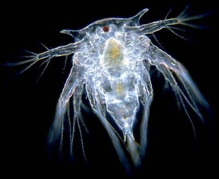
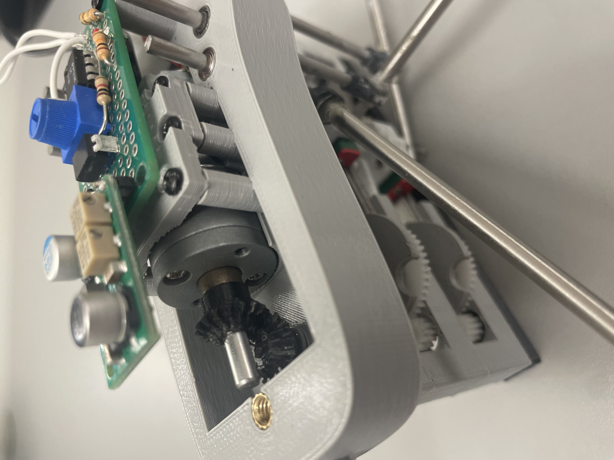
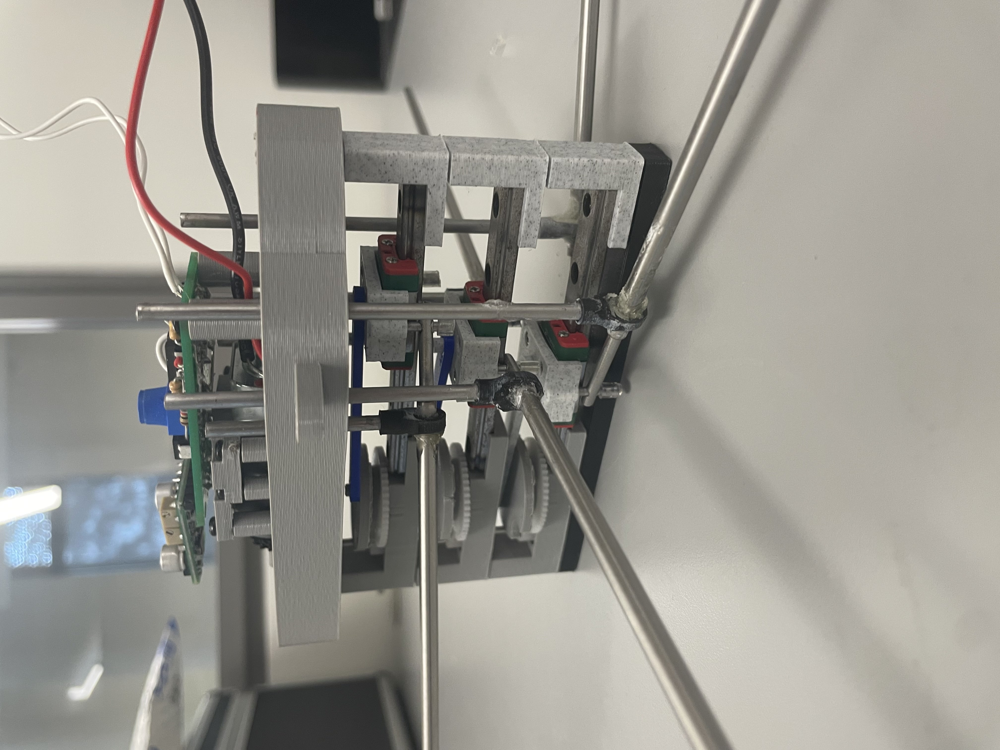
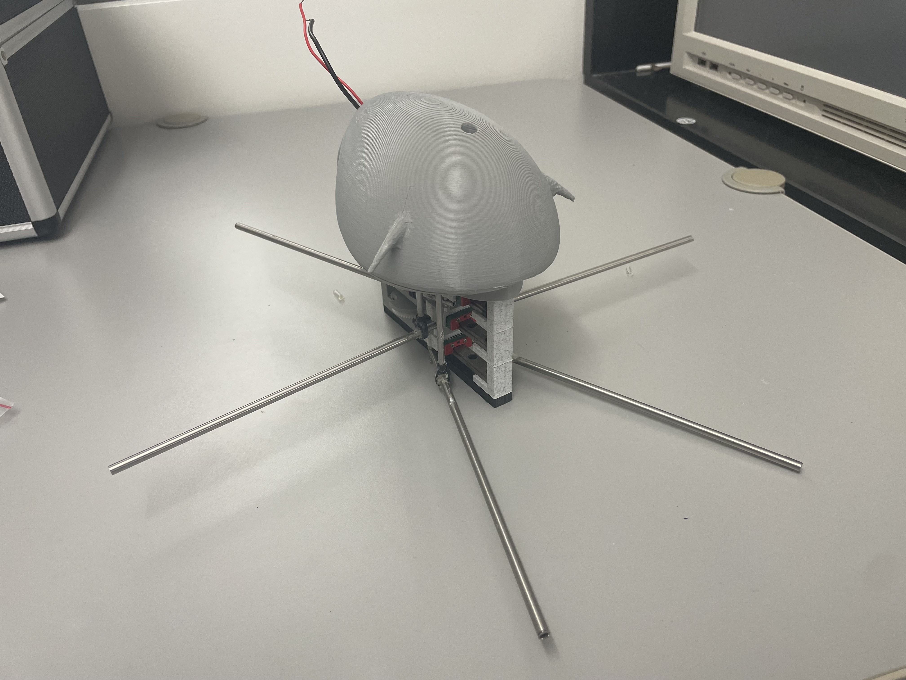

Biomimetic Robotics
Nauplius-Inspired Swimming Robot
October 2024 – January 2026
I worked with Nathan Brewer and Professor Carr Everbach on a robot based on the swimming stroke of a barnacle nauplius. We built a single-motor mechanism to drive three pairs of limbs, then packaged it with waterproof electronics and a light-activated control system.
Mechanism development, CAD, prototyping, fabrication, enclosure design, and testing.
A single motor drives coordinated periodic strokes through a geared linkage system.
Demonstrated phase-controlled limb motion, waterproof packaging, and light activation.
CAD, mechanism design, 3D printing, electronics packaging, assembly, and iteration.
Why a nauplius?
The barnacle nauplius uses an asymmetric, phased swimming stroke to move through a highly viscous environment near the Stokes-flow regime. At that scale, inertia contributes very little, so the order and timing of each limb motion strongly affect whether the organism produces net propulsion.
In collaboration with researchers at the University of Washington School of Oceanography, our goal was to create a physical model that reproduced the organism's appendage motion closely enough to study its swimming dynamics under controlled conditions.

One motor, six coordinated limbs
One motor drives all six limbs through a gear train and linkages. The main challenge was matching both the angular stroke of each limb and the timing between the three pairs.
We adjusted pivot positions, linkage lengths, and gear timing together, while keeping the mechanism small enough to resemble the nauplius’s proportions.
Interactive model of the core transmission and linkage system.
First working mechanism
This was the first version that moved all three limb pairs together. The motor could run continuously while the strokes stayed in phase despite real assembly tolerances.
Inside the mechanism
The stacked gears, supports, and limb pivots had to fit into a small space without becoming impossible to assemble or repair. These photos show how the motor’s motion reaches the limbs.


Putting the robot together
Once the mechanism worked, we still had to fit the electronics inside a waterproof housing and keep the outside shape close enough to the nauplius for fluid tests.
The finished prototype brought the transmission, supports, appendages, and control electronics into one assembly. We went through several builds to sort out problems that were not obvious when the parts were tested separately.

Starting it with light
Direct access to the robot is limited during viscous-fluid testing, so the control system uses a light sensor as a simple non-invasive trigger. Applying a flashlight activates the motor; removing the light stops it.